SNMP Monitoring
High Level Network Diagram
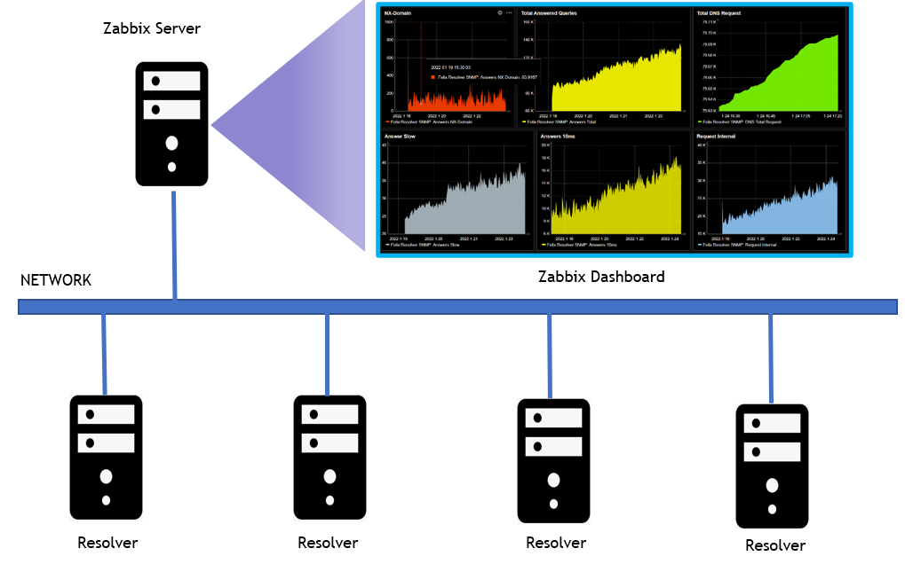
Whalebone SNMP agent is enabled in the resolvers to actively monitor the local resources, quires and statistics.
SNMP OID
SNMP OID stands for Object Identifiers for creating an SNMP Template for Network Monitoring tool. Below table is the Whalebone SNMP OID’s.
Property |
ID |
SNMP OID |
|---|---|---|
Hostname |
1 |
.1.3.6.1.4.1.8072.1.3.2.4.1.2.9.119.104.97.108.101.98.111.110.101.1 |
Check Port |
2 |
.1.3.6.1.4.1.8072.1.3.2.4.1.2.9.119.104.97.108.101.98.111.110.101.2 |
Check Resolve |
4 |
.1.3.6.1.4.1.8072.1.3.2.4.1.2.9.119.104.97.108.101.98.111.110.101.3 |
CPU Count |
6 |
.1.3.6.1.4.1.8072.1.3.2.4.1.2.9.119.104.97.108.101.98.111.110.101.4 |
Memory Available |
7 |
.1.3.6.1.4.1.8072.1.3.2.4.1.2.9.119.104.97.108.101.98.111.110.101.6 |
Memory Total |
8 |
.1.3.6.1.4.1.8072.1.3.2.4.1.2.9.119.104.97.108.101.98.111.110.101.7 |
Memory Usage |
9 |
.1.3.6.1.4.1.8072.1.3.2.4.1.2.9.119.104.97.108.101.98.111.110.101.8 |
HDD Free |
10 |
.1.3.6.1.4.1.8072.1.3.2.4.1.2.9.119.104.97.108.101.98.111.110.101.9 |
HDD Total |
11 |
.1.3.6.1.4.1.8072.1.3.2.4.1.2.9.119.104.97.108.101.98.111.110.101.10 |
HDD Usage |
12 |
.1.3.6.1.4.1.8072.1.3.2.4.1.2.9.119.104.97.108.101.98.111.110.101.11 |
Swap Free |
13 |
.1.3.6.1.4.1.8072.1.3.2.4.1.2.9.119.104.97.108.101.98.111.110.101.12 |
Swap Total |
14 |
.1.3.6.1.4.1.8072.1.3.2.4.1.2.9.119.104.97.108.101.98.111.110.101.13 |
Swap Usage |
15 |
.1.3.6.1.4.1.8072.1.3.2.4.1.2.9.119.104.97.108.101.98.111.110.101.14 |
Timestamp |
16 |
.1.3.6.1.4.1.8072.1.3.2.4.1.2.9.119.104.97.108.101.98.111.110.101.15 |
Requests Total |
17 |
.1.3.6.1.4.1.8072.1.3.2.4.1.2.9.119.104.97.108.101.98.111.110.101.16 |
equests Internal |
18 |
.1.3.6.1.4.1.8072.1.3.2.4.1.2.9.119.104.97.108.101.98.111.110.101.17 |
Requests UDP |
19 |
.1.3.6.1.4.1.8072.1.3.2.4.1.2.9.119.104.97.108.101.98.111.110.101.18 |
Requests TCP |
20 |
.1.3.6.1.4.1.8072.1.3.2.4.1.2.9.119.104.97.108.101.98.111.110.101.19 |
Requests DoT |
21 |
.1.3.6.1.4.1.8072.1.3.2.4.1.2.9.119.104.97.108.101.98.111.110.101.20 |
Requests DoH |
22 |
.1.3.6.1.4.1.8072.1.3.2.4.1.2.9.119.104.97.108.101.98.111.110.101.21 |
Requests XDP |
23 |
.1.3.6.1.4.1.8072.1.3.2.4.1.2.9.119.104.97.108.101.98.111.110.101.22 |
Answers Total |
24 |
.1.3.6.1.4.1.8072.1.3.2.4.1.2.9.119.104.97.108.101.98.111.110.101.23 |
Answers cached |
25 |
.1.3.6.1.4.1.8072.1.3.2.4.1.2.9.119.104.97.108.101.98.111.110.101.24 |
Answers No error |
26 |
.1.3.6.1.4.1.8072.1.3.2.4.1.2.9.119.104.97.108.101.98.111.110.101.25 |
Answers No data |
27 |
.1.3.6.1.4.1.8072.1.3.2.4.1.2.9.119.104.97.108.101.98.111.110.101.26 |
Answers NX-Domain |
28 |
.1.3.6.1.4.1.8072.1.3.2.4.1.2.9.119.104.97.108.101.98.111.110.101.27 |
Answers SERVFAIL |
29 |
.1.3.6.1.4.1.8072.1.3.2.4.1.2.9.119.104.97.108.101.98.111.110.101.28 |
Answers 1ms |
30 |
.1.3.6.1.4.1.8072.1.3.2.4.1.2.9.119.104.97.108.101.98.111.110.101.29 |
Answers 10ms |
31 |
.1.3.6.1.4.1.8072.1.3.2.4.1.2.9.119.104.97.108.101.98.111.110.101.30 |
Answers 50ms |
32 |
.1.3.6.1.4.1.8072.1.3.2.4.1.2.9.119.104.97.108.101.98.111.110.101.31 |
Answers 100ms |
33 |
.1.3.6.1.4.1.8072.1.3.2.4.1.2.9.119.104.97.108.101.98.111.110.101.32 |
Answers 250ms |
34 |
.1.3.6.1.4.1.8072.1.3.2.4.1.2.9.119.104.97.108.101.98.111.110.101.33 |
Answers 500ms |
35 |
.1.3.6.1.4.1.8072.1.3.2.4.1.2.9.119.104.97.108.101.98.111.110.101.34 |
Answers 1000ms |
36 |
.1.3.6.1.4.1.8072.1.3.2.4.1.2.9.119.104.97.108.101.98.111.110.101.35 |
Answers 1500ms |
37 |
.1.3.6.1.4.1.8072.1.3.2.4.1.2.9.119.104.97.108.101.98.111.110.101.36 |
Answers slow |
38 |
.1.3.6.1.4.1.8072.1.3.2.4.1.2.9.119.104.97.108.101.98.111.110.101.37 |
Answers AA |
39 |
.1.3.6.1.4.1.8072.1.3.2.4.1.2.9.119.104.97.108.101.98.111.110.101.38 |
Answers TC |
39 |
.1.3.6.1.4.1.8072.1.3.2.4.1.2.9.119.104.97.108.101.98.111.110.101.39 |
Answers RA |
40 |
.1.3.6.1.4.1.8072.1.3.2.4.1.2.9.119.104.97.108.101.98.111.110.101.40 |
Answers RD |
41 |
.1.3.6.1.4.1.8072.1.3.2.4.1.2.9.119.104.97.108.101.98.111.110.101.41 |
Answers AD |
42 |
.1.3.6.1.4.1.8072.1.3.2.4.1.2.9.119.104.97.108.101.98.111.110.101.42 |
Answers CD |
43 |
.1.3.6.1.4.1.8072.1.3.2.4.1.2.9.119.104.97.108.101.98.111.110.101.43 |
Answers DO |
44 |
.1.3.6.1.4.1.8072.1.3.2.4.1.2.9.119.104.97.108.101.98.111.110.101.44 |
Answers ENDS0 |
45 |
.1.3.6.1.4.1.8072.1.3.2.4.1.2.9.119.104.97.108.101.98.111.110.101.45 |
Queries EDNS |
46 |
.1.3.6.1.4.1.8072.1.3.2.4.1.2.9.119.104.97.108.101.98.111.110.101.46 |
Queries DNSSEC |
47 |
.1.3.6.1.4.1.8072.1.3.2.4.1.2.9.119.104.97.108.101.98.111.110.101.47 |
Predict Epoch |
48 |
.1.3.6.1.4.1.8072.1.3.2.4.1.2.9.119.104.97.108.101.98.111.110.101.48 |
Predict learned |
49 |
.1.3.6.1.4.1.8072.1.3.2.4.1.2.9.119.104.97.108.101.98.111.110.101.49 |
Predict Queue |
50 |
.1.3.6.1.4.1.8072.1.3.2.4.1.2.9.119.104.97.108.101.98.111.110.101.50 |
Zabbix Integration
The agent gathers operational information locally and reports data to Zabbix server for processing. Moreover, Zabbix offers excellent reporting and data visualization features based on the stored data from the resolver.
Zabbix is a monitoring tool that provides performance metrics such as network utilization, CPU and memory utilization. It also monitors network disconnection and server unavailability.
How to import the Whalebone Template
To import the Whalebone template, go to Zabbix Configuration. Under the configuration go to templates.
On the Templates tab, select Import and select the template file.
{kind=link}
{kind=link}
How to add the resolver in Zabbix Monitoring
To add the host, go to Configuration then click hosts. Click create host then provide the hostname, groups. After that add the resolver ip address.
Under the interface select the SNMP → Provide the SNMP Ip address → Port 161 → SNMP version SNMPv2 then add the SNMP Community.
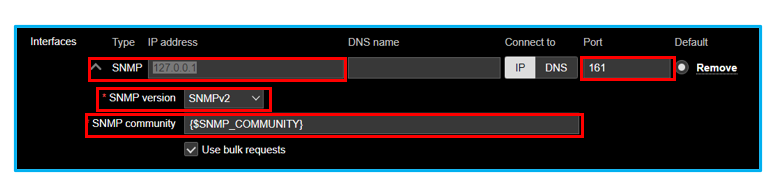After adding the host go to templates tab → Select the whalebone template. Click select and add.
After selecting the Whalebone template go back to host and click add. On the hosts tab we can see that the resolver has been added on the Zabbix.
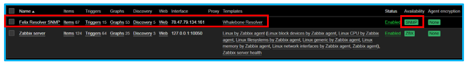
{kind=link}
{kind=link}
Note
SNMP data from the resolver to Zabbix will take time to initialized. Wait the Zabbix to gather data from the server. Always observe the availability on the right corner to see if it’s green. Green means its already connected to the whalebone resolver.
How to add the Whalebone widget on Zabbix dashboard
To add the dashboard, go to Monitoring then Dashboard. On the dashboard Global view, we can see the edit dashboard. Click the edit dashboard to add new graphs.
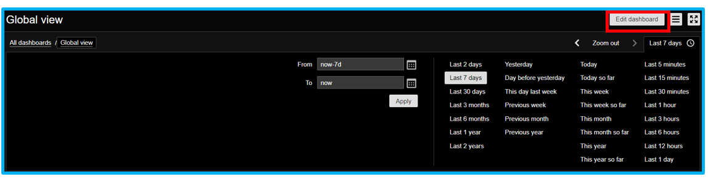
Note
Before adding graphs on the dashboard make sure that the host already detected the graphs. You can find the grapns on the configuration > hosts > graphs.
Click the edit dashboard and add widget → Select type → Graph. Provide a name of the widget.
Select a data set which is the hostname and select the item pattern where we can find the whalebone template.
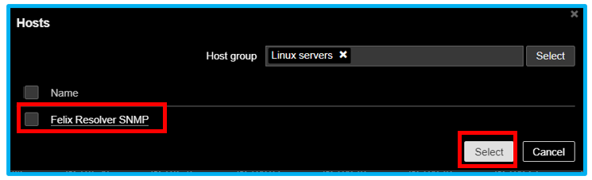Select the items you want to add on the widget for graphical visualization. After the adding item patern. Select base color for graphs then you can adjust the width, point size, transparency, and fill.
On here we successfully added a widget on the dashboard. To edit or change the widget, click the gear icon.
Dont forget to click the save button on the upper right to save the widget on the dashboard.
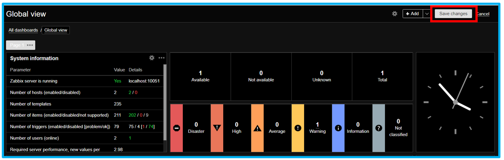
{kind=link}
{kind=link}
{kind=link}
How to add triggers on the Zabbix
Triggers are logical expression that “evaluate” data gathered by items and represent the current system state. Triggers expression allow to define a threshold of what state of data is acceptable. Therefore, if the incoming data surpass the acceptable state, a trigger is “fired” - or changes status to PROBLEM. Example if the whalebone resolver encountered 1,000 NXDOMAIN the trigger will be intialized to notify us that the data has exceeded from the set threshold.
To configure the trigger, go to Configuration - Hosts. Click the triggers tab.
Create trigger → Provide name then add an expression. Let say we want to trigger if the resolver NXDOMAIN exceeds more than 60. Select severity for this trigger.
Click add → On the condition tab → Select the item. On here let’s select the NXDOMAIN.
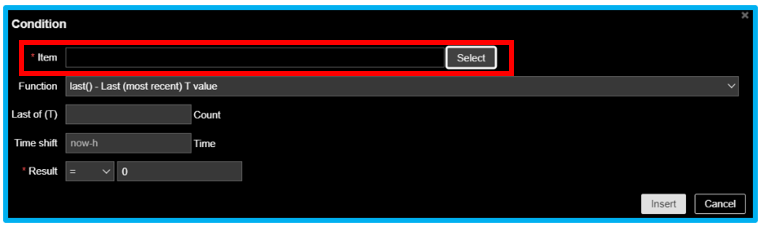On the condition tab, set the count → time shift - now-h → result. On the result select an operand then set the value to 60. This condition will trigger if the NXDOMAIN exceed to 60.
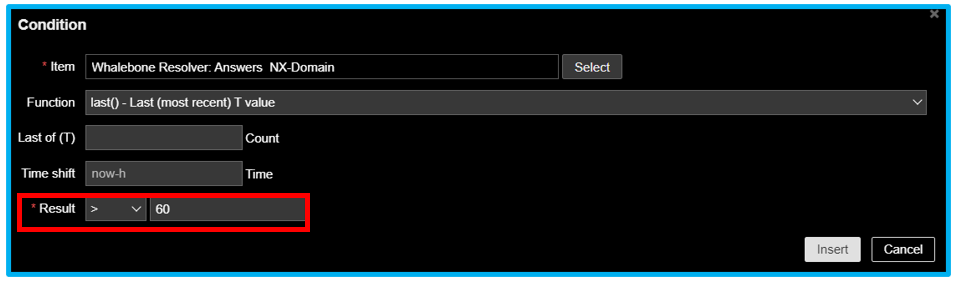Click insert and save the triggers. Make sure the trigger is enabled on the template.
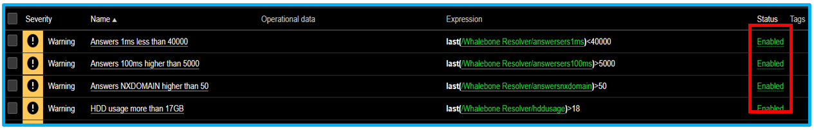On the problems tab, check the NXDOMAIN that exceeds the threshold.
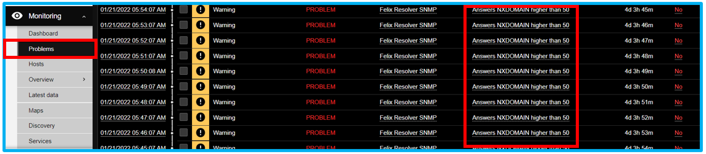On the dashboard, the NXDOMAIN that exceeds the threshold is identifiable.
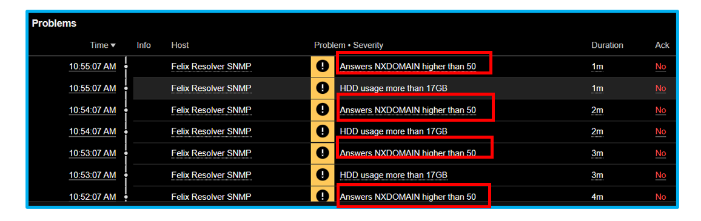
{kind=link}
{kind=link}
How to configure the trigger actions
Triggers action are logical expression that “evaluate” data gathered by items and represent the current system state. Trigger expression allow to define a threshold of what the data is “acceptable”. Therefore, if the incoming data surpass the acceptable state, a trigger is “fired” or changes status to PROBLEM. For this example, lets say the NXDOMAIN exceeds to 60. The trigger will initialize an email for the admin reporting or notification.
First step to set up a trigger action by using an email. Go to Administration and Media types. Create media type and provide Name → SMTP server → port → SMTP email > user and pass.
After you setup the email → Go to Configuration → Actions → Action triggers. On the trigger Actions → Create Action → Provide a name → Add a condition.
On the new condition window, select the Type: Trigger Operator: equals triggers: Select the NXDOMAIN.
Select the NXDOMAIN for Action Triggers. Click Add.
On the Actions → Click the Operation → Select the default operation to 1 min. On the operations click add.
Select the step duration to 1 minute. On the operation click add → Send to users → Add the Zabbix admin → Send only to → Email.
{kind=link}
{kind=link}
{kind=link}
{kind=link}
{kind=link}
{kind=link}
How to view the pre-defined Whalebone dashboard
For reference, the Whalebone template ha a sample dashboard that overviews the data from the resolver.
To access the dashboard, go to monitoring → hosts. Then in the host click the dasboard.
This is the overview of the pre-define Whalebone dashboard.
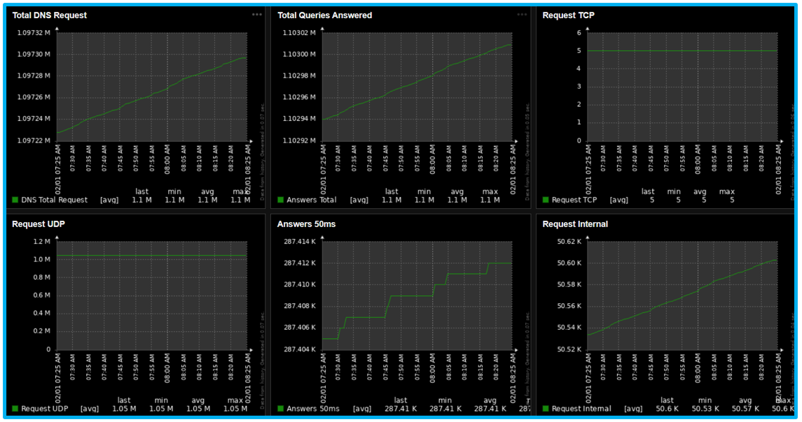
{kind=link}